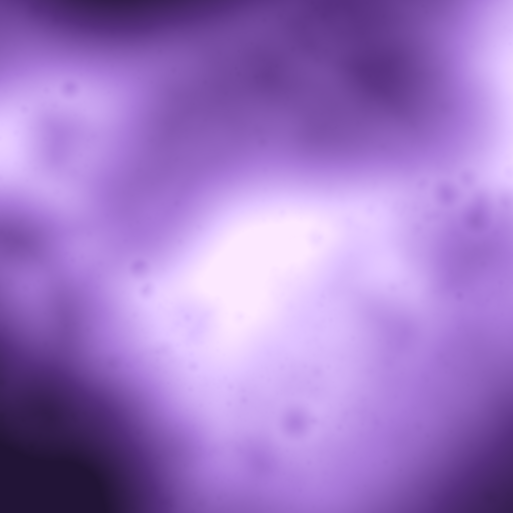
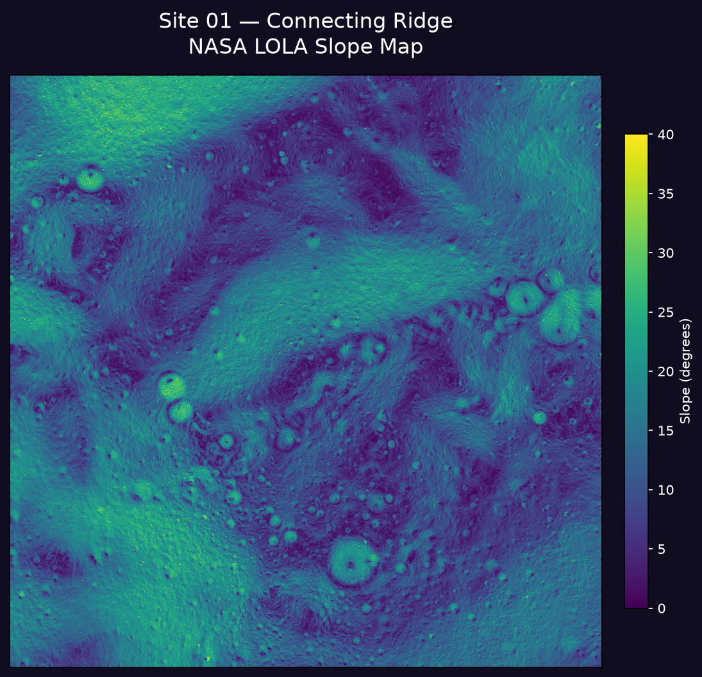

Study area
Lunar South Pole
Region of interest for future exploration.
Discover lunar terrain. Compare exploration regions. Turn scientific data into clearer mission-planning insights.
LUNAR TERRAIN INTELLIGENCE · NASA LOLA DATARegion of interest for future exploration.
Lunar elevation and terrain products.
NASA LOLA elevation and slope datasets are available for preliminary analysis of both candidate regions.
NASA LOLA · Selected site
Maximum − minimum
Elevation standard deviation
Valid elevation pixels
Available for comparison
NASA LOLA elevation data · Comparative study workspace

NASA LOLA elevation statistics · meters
Mean elevation and elevation standard deviation from NASA LOLA data. Elevation alone does not determine landing safety.
Candidate region for terrain-data investigation.
Second candidate region for comparison.
Review the selected study areas and their available evidence.
Comparing terrain steepness across two lunar study areas.
Source: NASA LOLA-derived 5 m/pixel slope datasets. Lower slopes may be favorable for landing, but slope alone does not establish landing safety or site suitability.
Percentage of each lunar study area within four slope ranges.
Slope ranges describe terrain steepness, not landing safety. These percentages summarize each study area at the resolution of the supplied NASA raster data.
Comparative measurements of terrain characteristics across both study areas.
Percentage of terrain with slopes above 15 degrees.
Elevation standard deviation across each study area.
Preliminary regional roughness estimates at 1 km resolution.
Coordinate alignment is not conclusively verified. These estimates must not be interpreted as landing-safety measurements.
Explore terrain steepness across the two lunar study areas. Both maps use the same color scale.

Colors represent slope angle, not elevation. Areas above 40° share the highest color on this map's scale. Slope alone cannot establish landing safety.
Explore the apparent direction and elevation of the Sun and Earth from either lunar study location at a selected observation time.
Direction is measured clockwise from north. The plot places objects near the outer ring at the horizon and toward the centre at higher elevation.
Azimuth: Waiting...
Elevation: Waiting...
Azimuth: Waiting...
Elevation: Waiting...
Select a location and calculate positions.
Compare the apparent elevation of the Sun and Earth over a configurable Earth-time observation window at both lunar study locations. Choose a start time, duration, and sampling interval to explore the observations.
Apparent elevation above the observer's astronomical horizon.
Apparent elevation above the observer's astronomical horizon.
Load the timeline to inspect observation readings.
Ready to request NASA/JPL observations.
What the current NASA terrain measurements reveal—and what still needs to be investigated before assessing a landing site.
Slope statistics help identify how much terrain is relatively gentle or steep within each study area.
Elevation statistics describe height differences and overall variability across the selected region.
Boulder distribution, crater hazards, and local surface roughness need additional analysis.
Lighting, communications, thermal conditions, and spacecraft landing requirements are not assessed by these terrain metrics.
Important: This dashboard provides preliminary terrain evidence, not a certified landing-safety assessment. A complete evaluation requires additional datasets and mission-specific criteria.
A preliminary comparison of terrain meeting the selected slope threshold.
The score represents the percentage of analyzed terrain with slopes at or below 10°. It is not the probability of a safe landing.
A complete assessment also needs to consider craters, boulders, terrain roughness, lighting, and mission constraints.
Planned terrain analysis: elevation, slope, data coverage, and measurement uncertainty, depending on the available products.
NASA data archive: LOLA 5 m/pixel products
Additional mission data: Lunar Reconnaissance Orbiter data products